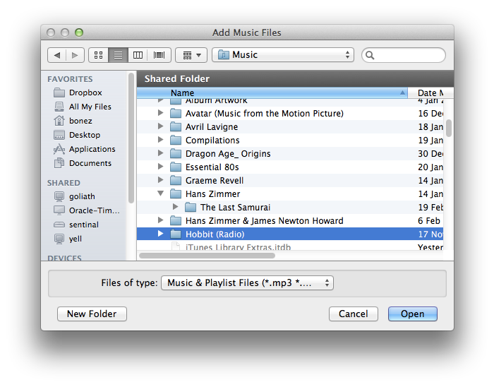

You can append both supported music and playlist files to your playlist using a standard file selection dialog.
When adding multiple files into a playlist Black Omega will group and sort the tracks by album.
The Add Files option can be accessed by
This will display a standard file selection dialog that will allow you to select one or more music or playlist files.
The Add Folder option can be accessed by
This will display a folder selection dialog that will allow you to select the folder whose music contents will be added to the playlist.
